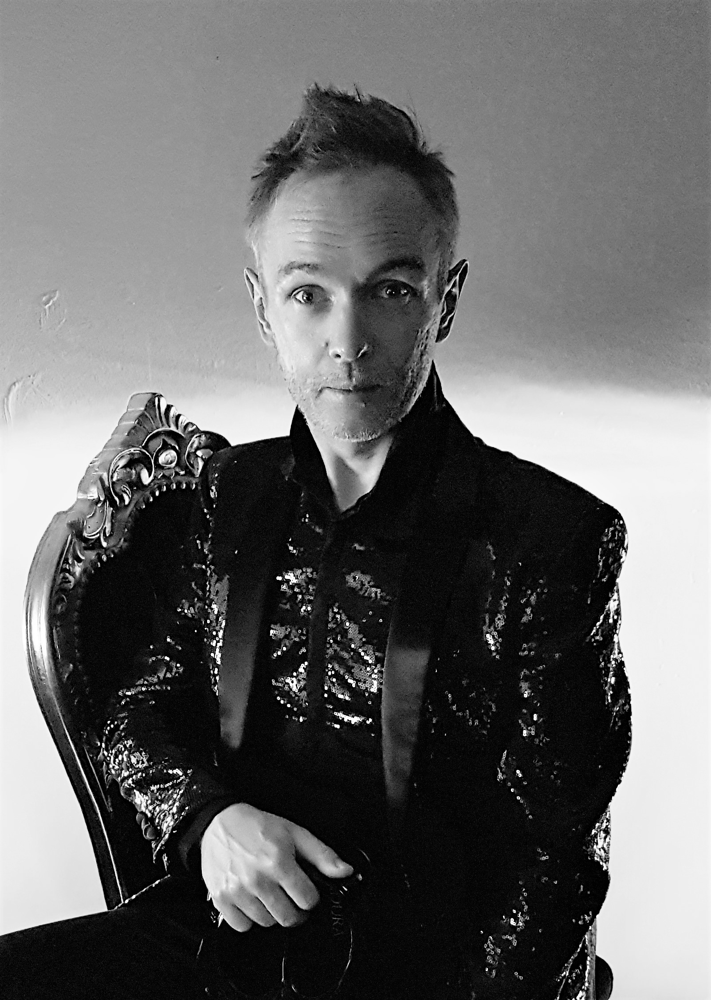

JAKUB BURZYŃSKI wurde 1976 in Zabrze (Polen) geboren. Ursprünglich lernte er Klavier. Er absolvierte die Studien der Musiktheorie an der Hochschule für Musik in Kattowitz und Sologesang an der Musikakademie in Bydgoszcz. Er studierte auch Dirigieren. 1998 gründete er das Ensemble La Tempesta, mit dem er regelmäßig Konzerte gibt und CDs mit Musik aus dem 16. bis 19. Jahrhundert einspielt. Er verkörperte Hauptrollen in Opern von Charpentier (Actéon), Purcell (King Arthur), Vivaldi (Dorilla in Tempe), Sarro (Didone abbandonata), Händel (Giulio Cesare, Rinaldo), Mysliveček (Motezuma), Mozart (Apollo et Hyacinthus, Mitridate re di Ponto), Krauze (Balthazar) und Zych (Poiesis). Als Solist und Dirigent spielte er einige Dutzend CDs für folgende Plattenfirmen ein: BIS, ARTS, DIVOX, NAXOS, MUSICON und DUX, darunter zehn Alben mit polnischer Musik. Die CD Vespers of Sorrow mit Werken von Antonio Vivaldi wurde vom britischen Portal Music Web International zur „Aufnahme des Jahres“ erklärt. Jakub Burzyński ist künstlerischer Leiter des Musikfestival Barok w Radości, langjähriger Lehrbeauftragter der Sommerakademie für Barockmusik (Letní škola barokní hudby) in Kelč, Holešov, Broumov und Valtice (Tschechien), künstlerischer Leiter der Internationalen Schule für Alte Musik auf Schloss Scharfeneck sowie regelmäßiger Vortragender beim Festival der Leisen Musik (Festiwal Cichej Muzyki) in Toruń.
